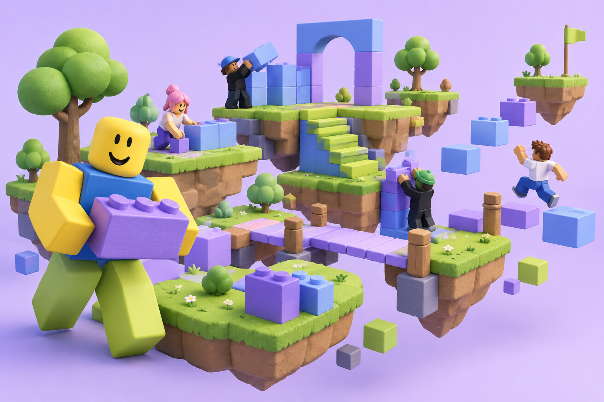

ONE DAY. YOUR OWN GAME.Big ideas.
Little blocks.
Your world.
An online day to make your own Roblox game.
Dream it. Build it. Press play. Beginners welcome!
October 1, 2026 · All day · Online 
100% YOUR
IMAGINATION✦START WITH A BLOCK. END WITH A WORLD.